전자기기기능장 (2009-03-29 기출문제)
1과목: 임의구분
1. 콘덴서 두 극판 사이의 간격이 d[m]이고, 전압이 V[V]이다. 이 극판사이에 전하 Q[C]의 입자가 받는 힘[N]은?
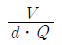
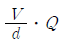
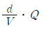
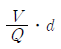
(정답률: 88%)

2. 전송하고자 하는 신호를 연속된 신호로 전송하는 것이 아니라 일정한 시간 간격으로 순간순간 신호의 진폭을 표본화하여 펄스 형태로 만든 다음에 전송하는 방식은?
- FM 통신방식
- AM 통신방식
- 펄스 통신방식
- 다중 통신방식
(정답률: 87%)
3. 다음 중 채널 명령어의 구성 요소가 아닌 것은?
- 블록의 위치
- 블록의 크기
- 체인(chain)
- 명령
(정답률: 73%)
4. 그림에서 스위치(SW)를 닫을 때의 충전전류 i(t) [A]는?
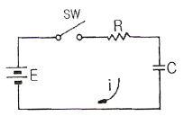
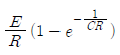
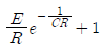
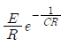
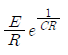
(정답률: 90%)
5. 자동 제어 조절계의 제어 편차가 검출될 때 편차가 변화하는 속도에 비례하여 조작량을 가감하도 하는 동작은?
- on-off 동작
- 비례위치 동작
- 적분 동작
- 미분 동작
(정답률: 80%)
6. 전원회로에서 무부하시 출력단자 전압이 100[V]이고, 부하를 연결했을 때의 출력단자 전압이 80[V]이었다. 전압변동률은 몇 [%]인가?
- 15
- 20
- 25
- 30
(정답률: 84%)
7. 고주파 자계 중에 놓인 도체에 생기는 와전류손(渦電流損)에 의한 발열 방식은?
- 초음파 가열
- 유전 가열
- 유도 가열
- 저항 가열
(정답률: 82%)
8. 레코드플레이어에서 톤 양(Tone Arm)의 부속품 가운데 암의 축에 비틀려는 힘의 작용을 막기 위한 것은?
- 암 베이스
- 암 리프트
- 래터럴 밸런서
- 인사이드 포스 캔슬러
(정답률: 82%)
9. 다음 Audio system block diagram에서 (A)의 기능으로 옳은 것은?
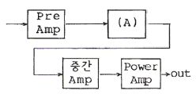
- EQ Amp
- Tone control Amp
- Speaker protector
- Power Supply
(정답률: 84%)
10. PN 접합에서 접합 용량에 영향을 주지 않는 것은?
- 역방향 전압의 크기
- 접합 면적의 크기
- 역포화 전류의 크기
- 공간전하 영역의 폭
(정답률: 67%)
11. 음(소리)의 3요소 가운데 그 중 하나를 설명한 것은?
- 소리의 반사에 의한 간접 음이 잔향이다.
- 높은 주파수의 소리일수록 흡수되는 성질이 강하다.
- 낮은 주파수의 소리일수록 반사하는 성질이 강하다.
- 소리의 높이는 기본 주파수 또는 파장에 의하여 정하여진다.
(정답률: 89%)
12. 2단자 임피던스 함수 Z(S)가
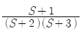
일때 극점(zero)은?- -2, -3
- 2,3
- +1
- -1
(정답률: 92%)
13. 다음 중 유도 전동기의 회전력은?
- 단자 전압에 정비례
- 단자 전압의 2승에 비례
- 단자 전압의 3승에 비례
- 단자 전압의 1/2에 비례
(정답률: 84%)
14. 다음 중 전자력에 관계되는 법칙은?
- 렌쯔의 법칙
- 플레밍의 왼손 법칙
- 플레밍의 오른손 법칙
- 암페어의 오른나사 법칙
(정답률: 82%)
15. 전파 정류회로의 직류(DC) 출력 전력은 반파 정류회로에 비하여 몇 배가 되는가?
- 2배
- 4배
- 8배
- 16배
(정답률: 85%)
16. 마이크로컴퓨터(microcomputer) 명령의 분류에 포함되지 않는 것은?
- 전송 명령
- 연산 명령
- 제어 명령
- 승산 명령
(정답률: 80%)
17. 다음 중 착오 검출 및 교정용 코드로 잘 활용되는 것은?
- BCD 코드(8421 code)
- 그레이 코드(Gray code)
- 해밍 코드(Hamming code)
- 3-초과 코드(Excess-3 code)
(정답률: 89%)
18. 플레밍의 왼손 법칙에서 엄지손가락의 방향은?
- 전류의 반대방향
- 자력선의 방향
- 전류의 방향
- 힘의 방향
(정답률: 88%)
19. JK 플립플롭에서 J=1, K=1일 때 클록 펄스가 들어가면 출력 Q는?
- 0
- 1
- Q
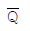
(정답률: 88%)
20. 테이프 리코더의 주파수 보상 회로에 대한 설명 중 옳은 것은?
- 녹음시는 주로 고역에 대하여 행하여진다.
- 재생시는 주로 고역에 대하여 행하여진다.
- 녹음시는 주로 저역에 대하여 행하여진다.
- 녹음, 재생 동일하게 고역에 대하여 행하여진다.
(정답률: 66%)
2과목: 임의구분
21. 교류전력제어에 사용되는 양방향 사이리스터(thyrister)는?
- SCR
- JFET
- MOSFET
- TRIAC
(정답률: 79%)
22. 재생용 EQ(Equalizer) 회로의 특성을 올바르게 표현한 것은?
- 저역과 중역의 이득을 올린다.
- 중역과 고역의 이득을 올린다.
- 저역의 이득을 낮추고, 고역의 이득을 올린다.
- 저역의 이득을 올리고, 고역의 이득을 낮춘다.
(정답률: 70%)
23. 녹음기에서 테이프를 일정한 속도로 움직이게 하는 것은?
- 캡스턴과 핀치롤러
- 핀치롤로와 텐션암
- 캡스턴과 테이프가이드
- 케이프가이드와 테이프패드
(정답률: 82%)
24. 컴퓨터와 주변장치 사이에 데이터 전송을 수행할 때 입ㆍ출력의 준비나 완료를 나타내는 신호가 필요한 비동기식 입ㆍ출력 시스템에 널리 쓰이는 방식은?
- Interrupt
- Polling
- Paging
- Handshaking
(정답률: 87%)
25. 어떤 명령이 실행되기 위해서 가장 먼저 이루어지는 마이크로오퍼레이션은?
- MBR ← PC
- PC ← PC+1
- IR ← MBR
- MAR ← PC
(정답률: 84%)
26. 다음 논리식의 성질 중 옳지 않은 것은?
- A+A = A
- 0ㆍA = 1
- AㆍA = A
- A+1 = 1
(정답률: 84%)
27. 그림의 회로에서 5[Ω]의 저항에 흐르는 전류는 몇 [A] 인가?
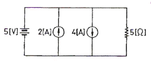
- 1
- 2
- 3
- 4
(정답률: 85%)
28. 정류 회로의 직류 전압이 300[V]이고, 리플 전압이 3[V]이었다. 이 회로의 리플 함유율은?
- 1[%]
- 2[%]
- 3[%]
- 10[%]
(정답률: 79%)
29. 크리스털 픽업(Pick Up)은 어떤 효과를 이용한 것인가?
- 홀 효과
- 광전 효과
- 압전기 효과
- 정전기 효과
(정답률: 87%)
30. 다음 중 이상적인 OP AMP의 조건은? (단, Ri=증폭기의 입력저항, Ro=출력저항)
- Ri = ∞, Ro = 0
- Ri = 0, Ro = ∞
- Ri = ∞, Ro = ∞
- Ri = 0, Ro = 0
(정답률: 82%)
31. Tr 증폭기에서 부하저항이 클수록 전류 이득은?
- 변함없다.
- 감소한다.
- 증가한다.
- CB에서는 증가, CE나 CC에서는 감소한다.
(정답률: 82%)
32. 다음 회로는 몇 진 카운터인가?
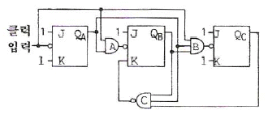
- 5진
- 6진
- 7진
- 8진
(정답률: 73%)
33. 바렉터(varactor) 다이오드에 대한 설명으로 옳은 것은?
- 가변 저항 역할을 한다.
- 가변 용량 역할을 한다.
- 가변 인덕턴스 역할을 한다.
- 가변 컨덕턴스 역할을 한다.
(정답률: 87%)
34. 컴퓨터 시스템에서 데이터의 입ㆍ출력을 관리하고, CPU의 명령 수행에 필요한 신호를 내보내는 장치는?
- DMA
- 제어장치
- 레지스터
- 프로그램 카운터
(정답률: 78%)
35. 스피커의 출력 음압 레벨을 측정하기 위해 사용되는 계측기가 아닌 것은?
- 와우ㆍ플로터 메터
- 표준 마이크
- 음압계
- 신호발생기
(정답률: 75%)
36. 녹음기에서 테이프 헤드 면이 스페이싱 손실이 없이 밀착되도록 하는 것은?
- 테이프 패드
- 캡스턴 핀치롤러
- 테이프가이드와 캡스턴
- 핀치롤러와 텐션암
(정답률: 77%)
37. 증폭도 Ao가 100인 증폭 회로에 궤환율 β가 -0.01의 부궤환을 걸면 증폭도 Af는?
- 180
- 150
- 100
- 50
(정답률: 75%)
38. 다음 중 전가산기 논리 회로를 구성하기 위하여 필요한 것은?
- 반가산기 2개
- 반가산기 2개와 OR 1개
- 반가산기 3개
- 반가산기 2개와 ANd 1개
(정답률: 91%)
39. 디지털 2진 반감산기의 합(Sum)을 만족시키는 게이트는?
- AND
- OR
- EX-OR
- EX-NOR
(정답률: 71%)
40. FM 검파회로에서 비(ratio) 검파회로가 사용되는 주된 이유는?
- 진폭 제한 작용을 가지므로
- 출력 임피던스가 낮으므로
- 검파 출력 전압이 크므로
- 동조가 간단하므로
(정답률: 75%)
3과목: 임의구분
41. 다음 논리식을 간략화 하면?
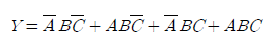
- Y=A
- Y=B
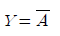
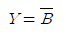
(정답률: 88%)
42. 강력한 초음파를 액체 속에 방사했을 때 일어나는 현상은?
- 전기왜형
- 압전효과
- 자기왜형
- 캐비테이션
(정답률: 92%)
43. 입ㆍ출력장치와 주기억장치를 연결하는 중계 역할을 하는 것은?
- Bus
- Buffer
- Channel
- Device
(정답률: 76%)
44. 다음 중 반도체 레이저에서 가장 많이 사용되는 결정은?
- GaAs
- CdS
- ZnAs
- SnAs
(정답률: 80%)
45. 전구에 걸리는 전압이 10[%] 낮아진 경우 전구의 소비전력은 약 몇 [%]로 되는가?
- 100
- 90
- 81
- 80
(정답률: 85%)
46. 다음 논리회로와 등가인 논리 게이트는?
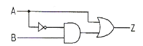
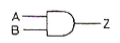
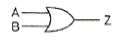
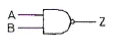
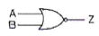
(정답률: 73%)
47. CAD에서 도면을 작성할 때 3가지 도면으로 구분한다. 다음 중 3가지 도면에 속하지 않는 것은?
- 단일 도면
- 평면 도면
- 계층 도면
- 스케치 도면
(정답률: 86%)
48. 마이크로컴퓨터에서 정보를 전송하는 선(線)은?
- 어드레스 버스
- 데이터 버스
- 제어 버스
- 인터럽트
(정답률: 88%)
49. 서브루틴(subroutine) 호출시 복귀 주소를 저장하는 것은?
- ROM
- pointer
- stack
- program counter
(정답률: 91%)
50. 다음 중소 지정방식 중 속도(speed) 문제로 볼 때 가장 빠른 것은?
- direct address
- indirect address
- calculated address
- immediate address
(정답률: 88%)
51. 다음 중 교류 전동기는?
- 유도 전동기
- 직권 전동기
- 분권 전동기
- 복권 전동기
(정답률: 85%)
52. 소음이 있을 때 필요한 소리가 소음의 영향으로 잘 들리지 않는 현상(효과)은?
- 스테레오 효과
- 양이(兩耳) 효과
- 명룡(鳴龍) 현상
- 마스킹(masking) 효과
(정답률: 91%)
53. 다음 회로에서 출력 VO는? (단, R1=R2=R3=R)
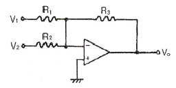
- VO = -(V1+V2)
- VO = V1+V2
- VO = V1-V2
- VO = -(V1-V2)
(정답률: 82%)
54. 잡음지수 8[dB]이고, 이득 10[dB]인 증폭기에 잡음지수 1[dB], 이득 10[dB]인 증폭기를 직렬로 했을 때의 종합잡음지수는?
- 1.9[dB]
- 8[dB]
- 9[dB]
- 19[dB]
(정답률: 89%)
55. 다음 [표]는 A 자동차 영업소의 월별 판매실적을 나타낸 것이다. 5개월 단순이동평균법으로 6월의 수요를 예측하면 몇 대인가?
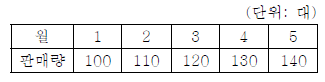
- 120
- 130
- 140
- 150
(정답률: 93%)
56. 다음 중 계수치 관리도가 아닌 것은?
- c 관리도
- p 관리도
- u 관리도
- x 관리도
(정답률: 69%)
57. 품질관리 기능의 사이클을 표현한 것으로 옳은 것은?
- 품질개선 - 품질설계 - 품질보증 - 공정관리
- 품질설계 - 공정관리 - 품질보증 - 품질개선
- 품질개선 - 품질보증 - 품질설계 - 공정관리
- 품질설계 - 품질개선 - 공정관리 - 품질보증
(정답률: 69%)
58. 부적합품률이 1[%]인 모집단에서 5개의 시료를 랜덤하게 샘플링할 때, 부적합품수가 1개일 확률은 약 얼마인가? (단, 이항분포를 이용하여 계산한다.)
- 0.048
- 0.⑤8
- 0.48
- 0.58
(정답률: 65%)
59. 다음 중 반즈(Ralph M. Barnes)가 제시한 동작경제의 원칙에 해당되지 않는 것은?
- 표준작업의 원칙
- 신체의 사용에 관한 원칙
- 작업장의 배치에 관한 원칙
- 공구 및 설비의 디자인에 관한 원칙
(정답률: 45%)
60. 다음 검사의 종류 중 검사공정에 의한 분류에 해당되지 않는 것은?
- 수입검사
- 출하검사
- 출장검사
- 공정검사
(정답률: 90%)